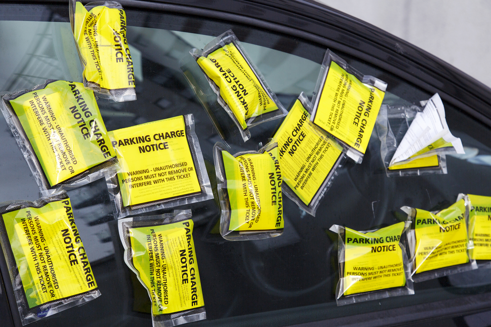

As part of a volunteer working group, we provide support and resources to the drivers who are wrongly given parking tickets so that they can successfully plead their case in front of a judge.
A 2018 study by WBEZ and ProPublica found that black motorists are frequently forced into a spiral of crushing ticket debt and, often, Chapter 13 bankruptcy in order to resolve that debt, restore their driver’s license to good standing, and free their vehicle from impoundment. Recently, the state of Illinois and city of Chicago have taken measures to allow motorists to regain driving privileges provided their only offense is unpaid parking tickets; additionally, the city has paused the draconian debt collection measures that include garnishing state income tax rebates and forcing motorists to post thousands of dollars simply to enter into a repayment plan.